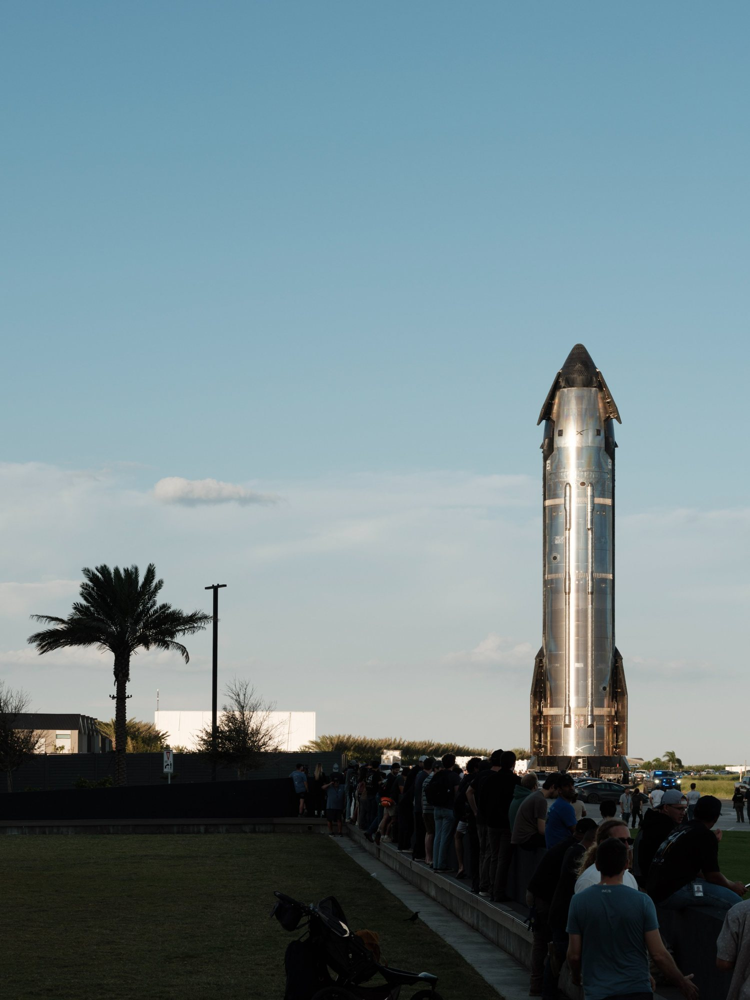
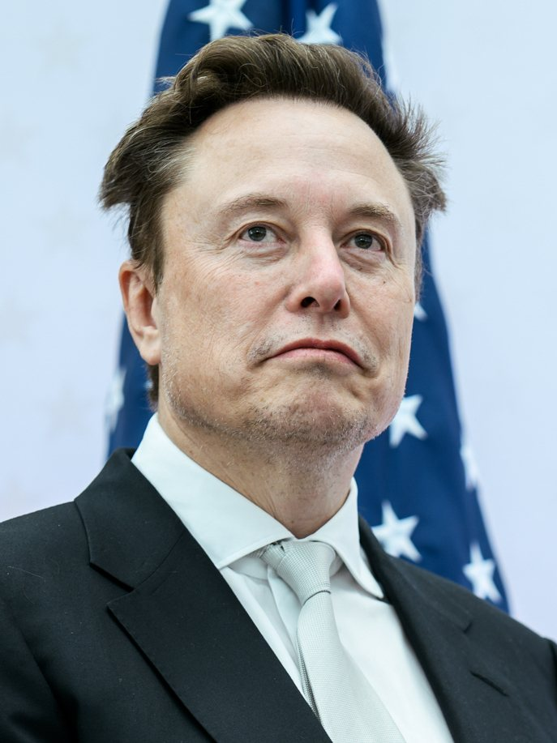
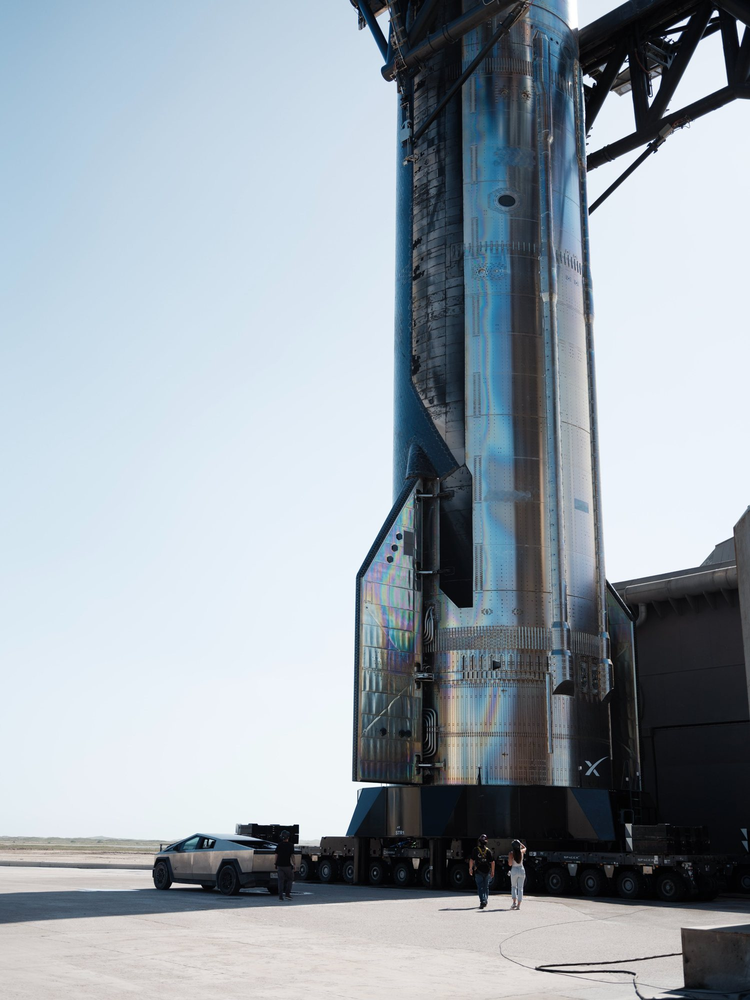

Tre giorni fa la domanda era quando: Musk aveva scritto, come raccontato nel dossier del 16 novembre, che Ship 42, la nave presa al volo dai bracci della torre di Starbase il 14 novembre, avrebbe potuto rivolare dopo qualche settimana di lavori. Mercoledì sera la risposta è cambiata. «Because it’s kind of a historic ship, we’re going to, I think, not take any chances with this ship and just kind of leave it for public display». Poiché è una nave storica, ha detto Musk, non correremo rischi e la lasceremo in esposizione al pubblico. Il primo stadio superiore di Starship recuperato intero non sarà quindi il primo a essere riutilizzato. Diventa un pezzo da museo, nel senso letterale del termine.
Due palchi, un collegamento da Shenzhen
Musk si trovava in Cina, a Shenzhen, al seguito della delegazione del presidente Donald Trump per il vertice APEC. Da lì si è collegato prima con Austin, in Texas, per chiudere la seconda giornata del TomorrowX Summit, intervistato da Gavin Baker di Atreides Management e Antonio Gracias di Valor Equity Partners, due investitori che lui stesso ha presentato come suoi migliori amici. Poi con New York, dove Andrew Ross Sorkin lo aspettava sul palco della DealBook Summit al Jazz at Lincoln Center, ultimo ospite della giornata. Per lui era mattina presto.
Le due conversazioni sono state molto diverse. A Austin si è parlato quasi solo di ingegneria e di numeri: Starship, calcolo, chip, robot. A New York Sorkin ha portato Musk sulla politica, sull’Ucraina, sul compenso in Tesla e sulla fusione tra le due aziende. Messe insieme, raccontano dove sta andando SpaceX meglio di molti documenti ufficiali.
Ship 42, la nave che resta a terra
Gavin Baker ha aperto proprio da lì: Ship 42, Flight 15, «era destino», ha scherzato, con un riferimento al numero che i lettori di fantascienza conoscono bene. Musk ha spiegato la portata del risultato. Il Super Heavy è già stato ripreso dalla torre tre volte, e un booster già volato è stato fatto rivolare e ripreso; mancava la nave. «So just catching the ship was the final major piece», ha detto: catturare la nave era l’ultimo grande tassello. E non solo catturarla, ma riaverla in buone condizioni, «with, in this case, only minor repairs needed to refly it», con solo piccole riparazioni necessarie per farla rivolare.
Proprio per questo la scelta di non farla rivolare è significativa. Tecnicamente Ship 42 potrebbe tornare in orbita, ma SpaceX preferisce non rischiare la perdita del primo stadio superiore riutilizzabile della storia. Musk lo ha detto con una formula prudente, «I think», segno che la decisione è un orientamento e non un annuncio formale. Non ha indicato dove la nave sarà esposta né quando. Il primo riuso di una nave Starship toccherà quindi a un esemplare successivo, quando SpaceX riuscirà a ripetere il catch.
Il senso del risultato, per Musk, è economico prima che simbolico. Con la riutilizzabilità piena e rapida, ha ripetuto, Starship può ridurre il costo di accesso allo spazio di un fattore 100, e un giorno forse di 1.000, portando la capacità di trasporto verso l’orbita nell’ordine del milione di tonnellate l’anno. È la condizione, nel suo racconto, per costruire città sulla Luna e su Marte.

Mezzo gigawatt di calcolo al mese
La parte più densa di numeri riguarda l’intelligenza artificiale, che dentro SpaceX è ormai un’attività di primo piano. Musk ha detto che oggi il gruppo mette in linea circa mezzo gigawatt al mese di capacità di calcolo per l’IA, pari a circa 220.000 GPU Nvidia GB300 con processori, rete e raffreddamento. Il conto è fatto a livello di centrale elettrica, perché è la potenza il vero collo di bottiglia: poco più di 500 megawatt al mese. Entro la fine del 2027 il ritmo dovrebbe superare un gigawatt al mese.
Sui costi Musk ha contestato le stime degli analisti: secondo lui sono sbagliate di un fattore 2, a volte di più, e SpaceX costruisce a circa il 60% del valore di consenso del settore. Il metodo è quello delle fabbriche Tesla e SpaceX: una squadra interna che chiama «Army X», compiti spezzati in operazioni che si imparano in pochi giorni, cantieri aperti giorno e notte, e i Megapack di Tesla per livellare i picchi di assorbimento delle GPU, che altrimenti metterebbero a rischio le turbine. È lo stesso approccio, centrali elettriche proprie comprese, che sta dietro l’impianto da 35 turbine a gas di Starbase autorizzato lunedì dal Texas, raccontato nel dossier di ieri.
Il giorno prima, sullo stesso palco di Austin, il direttore finanziario di SpaceX Bret Johnsen aveva dato la versione contabile: i primi gigawatt di calcolo a terra costano a SpaceX, in media, tra i 30 e i 35 dollari per watt, contro i 50-60 che stima per il resto del settore, e i contratti di hosting si ripagano in meno di un anno. Per finanziare la crescita SpaceX conta su flussi di cassa, anticipi dei clienti e debito, compresa una linea di finanziamento da 40 miliardi di dollari per le GPU organizzata con Apollo e Goldman Sachs.
Anthropic chiede altri 10 gigawatt
A New York Sorkin ha chiesto a Musk di Anthropic, l’azienda di Claude che una volta lui giudicava pericolosa e che oggi affitta capacità di calcolo da SpaceX. Musk ha raccontato di aver incontrato molte persone dell’azienda prima di firmare: «no one I met at Anthropic set off my “evil detector”», nessuno ha fatto scattare il mio rilevatore del male. I contratti sono di breve durata e ciascuna parte può recedere, Anthropic con un preavviso da 3 a 6 mesi a seconda dell’accordo.
Musk ritiene improbabile che Anthropic se ne vada. Al contrario, ha detto, lo scenario più probabile indicato dall’azienda è chiedere a SpaceX altri 10 gigawatt di calcolo. «So that’s a big number», ha commentato. Il contesto rende la frase pesante: proprio mercoledì Anthropic ha fissato il prezzo della sua quotazione a 83 dollari per azione, raccogliendo 81,3 miliardi di dollari nella più grande offerta pubblica mai registrata, davanti a quella di SpaceX.

Starmind e il calcolo in orbita
Il passo successivo è portare i data center nello spazio, ed è qui che Starship torna al centro. Musk ha detto che SpaceX punta a produrre 200 gigawatt l’anno di pannelli fotovoltaici per lo spazio, circa il 40% del consumo elettrico medio degli Stati Uniti, sfruttabili per intero perché in orbita non ci sono notte né nuvole. Per lanciarli serve il tonnellaggio che solo Starship può offrire.
Il satellite di calcolo si chiama Starmind e, secondo Musk, è un problema ingegneristico più semplice di Starlink V3. «I’m not sure why people think that making an AI satellite would be hard», ha detto, ricordando che SpaceX ha già oltre 11.000 satelliti in orbita. Starlink V3 è una stazione radio volante che lavora su bande Ka, Ku, W, V ed E con antenne a schiera di fase e collegamenti laser. Starmind, nella sua descrizione, è soprattutto una grande superficie di pannelli solari, circa 250 watt per metro quadrato, e un radiatore a due facce che disperde circa 1.200 watt per metro quadrato verso lo spazio profondo. Al centro c’è un computer grande circa un quarto di un rack Nvidia Vera Rubin NVL72, con le stesse capacità, collegato via laser alla rete Starlink.
Johnsen ha fornito il calendario: primi satelliti di calcolo in orbita nel 2027, rampa della costellazione nel 2028, capacità dell’ordine dei gigawatt disponibile sul mercato nel 2029. La piattaforma sarà derivata da Starlink V3, con GPU, più pannelli e radiatori dispiegabili al posto di parte dell’elettronica di comunicazione, in orbite eliosincrone per restare sempre al sole. Il CFO ha legato tutto alla nave: il recupero del secondo stadio dopo il rilascio di 26 satelliti è, per lui, la tappa decisiva, e il riuso rapido della nave dovrebbe portare un altro taglio di dieci volte del costo per chilogrammo.

Telefonia: satelliti V2 e microcelle sul tetto
Sorkin ha chiesto se SpaceX finirà per comprare un operatore telefonico americano. Musk ha risposto descrivendo un piano in due parti. La prima è nello spazio: la costellazione Direct to Cell di seconda generazione inizierà a essere lanciata l’anno prossimo, con una banda circa 40 volte superiore a quella dei satelliti attuali, e collegherà i normali telefoni senza nulla da aggiungere. Johnsen ha precisato che la prima costellazione, circa 600 satelliti, era una prova di concetto pensata per messaggi ed emergenze, mentre la nuova punta a un servizio di qualità 5G direttamente sui telefoni non modificati nella prima metà del 2028.
La seconda parte è a terra, ed è la novità. Il segnale dallo spazio non entra negli edifici, soprattutto sotto un tetto di metallo. Per coprire gli interni SpaceX userà lo spettro a 800 MHz oggetto dell’accordo con Grain Management annunciato a ottobre, con una rete di piccolissime stazioni di terra sparse nelle aree densamente abitate al posto delle grandi torri cellulari. Musk ha detto che il progetto esiste e che entrerà in produzione l’anno prossimo: una specie di microcella da mettere sul tetto come un’antenna Starlink, forse venduta insieme ai terminali. Quanto agli operatori, «I don’t think this means like AT&T, Verizon, or others go out of business»: perderanno forse un po’ di ricavi, ma la domanda di banda, trainata da intelligenza artificiale e robot, sarà enorme.
Tesla e SpaceX, «probabilmente» meglio insieme
L’ultima domanda di peso è stata sulla fusione tra Tesla e SpaceX, di cui si parla da settimane. Musk ha detto che cinque anni fa non ne avrebbe visto il senso, ma che oggi intelligenza artificiale e robotica hanno creato sovrapposizioni che prima non c’erano: entrambe le aziende hanno grandi gruppi software di IA e squadre di progettazione di chip, e lavorano già insieme su Terafab, la fabbrica di semiconduttori che Musk descrive come il più grande edificio della Terra. «You don’t need them to be together, but would they be better together? I mean, probably yes». Non servono insieme, ma starebbero meglio insieme? Probabilmente sì.
La decisione, ha aggiunto, spetta agli azionisti, e il voto in Tesla potrebbe anche non passare. Né lui può trascinare gli altri soci di SpaceX in un’operazione svantaggiosa: «I’ll obviously get sued», finirei ovviamente in tribunale. Sul pacchetto di compenso Tesla legato agli obiettivi, Musk ha detto che non dovrebbe ricevere nulla solo per aver fatto la fusione: «That would be unreasonable and not right».
Ucraina, il passaggio già raccontato
Una parte lunga dell’intervista di New York è tornata sull’Ucraina e sul limite di Starlink sopra i territori occupati, di cui abbiamo scritto il 15 novembre. Musk ha ripetuto che le regole di Starlink non sono cambiate, che il servizio civile non deve essere usato per operazioni militari offensive e che per quelle esiste Starshield, dove le decisioni spettano al Dipartimento della Guerra americano. Ha anche respinto di nuovo la ricostruzione secondo cui avrebbe spento Starlink per impedire un attacco ucraino alla flotta russa di Sebastopoli. Su questo fronte non ci sono fatti nuovi rispetto al dossier già pubblicato.
Che cosa aspettarsi adesso
Per Starship il punto da seguire è semplice: dove finirà Ship 42 e quale nave proverà per prima a rivolare dopo un catch. Il sito di Starbase ha già un giardino dei razzi, ma SpaceX non ha detto se la nave andrà lì. Sul calcolo, i prossimi segnali sono un eventuale nuovo contratto con Anthropic e i primi dettagli concreti su Starmind, che secondo il calendario dichiarato deve volare già l’anno prossimo. Sulla telefonia, servirà vedere le prime microcelle e il via ai lanci dei satelliti V2. Sulla fusione con Tesla, infine, non c’è ancora nessuna proposta formale: per ora c’è solo un «probabilmente sì».
Il dossier sul permesso per le turbine a gas di Starbase passa all’archivio Notizie: questa pagina mette in primo piano il destino di Ship 42 e i piani che Musk ha esposto in una sola giornata da Shenzhen.
Fonti pubbliche e tracce
Ultimo aggiornamento editoriale: 19 novembre 2026. Nel corpo non si ripete la fonte a ogni frase: le tracce sono raccolte qui. Le citazioni di Musk sono riportate in inglese come pronunciate, con traduzione italiana; obiettivi e calendari sono dichiarazioni, non risultati.
- The Singju Post, trascrizione integrale dell’intervento di Elon Musk al TomorrowX Summit, 18 novembre 2026: Ship 42 lasciata in esposizione, catch come «final major piece», fattore 100 sul costo di accesso allo spazio, mezzo gigawatt al mese, 220.000 GB300, oltre 1 GW al mese entro fine 2027, costi al 60% del consenso, Army X, Megapack, 200 GW l’anno di fotovoltaico per lo spazio, Starmind contro Starlink V3, 250 e 1.200 watt per metro quadrato.
- TomorrowX Summit, video dell’intervento di Musk con Gavin Baker e Antonio Gracias: collegamento dalla Cina, capitoli e temi della conversazione.
- GSM Global, 18 novembre 2026: collegamento da Shenzhen con la delegazione del presidente Trump per l’APEC, sessione di chiusura della seconda giornata ad Austin, nave ritirata per esposizione al pubblico, Terafab.
- The Singju Post, trascrizione integrale dell’intervista di Andrew Ross Sorkin a Elon Musk alla DealBook Summit, 18 novembre 2026: Direct to Cell V2 dal 2027 con banda 40 volte superiore, microcelle a 800 MHz in produzione l’anno prossimo, AT&T e Verizon, fusione Tesla e SpaceX, compenso Tesla, contratti con Anthropic e richiesta di altri 10 GW, Starlink e Starshield in Ucraina.
- CNBC, Shikhar Gupta, 18 novembre 2026: intervista a Jazz at Lincoln Center, fusione Tesla e SpaceX, contratti con Anthropic a breve termine, interesse per altri 10 GW, prezzo della quotazione Anthropic a 83 dollari e raccolta di 81,3 miliardi.
- CNBC, DealBook Summit 2026, aggiornamenti in diretta, 18 novembre 2026: Musk ultimo ospite della giornata, citazione «Probably yes» sulla fusione.
- Yahoo Finance, Deepti Sri, 18 novembre 2026: fusione e compenso Tesla, Terafab come progetto comune di Tesla e SpaceX.
- TMT Breakout, resoconto del TomorrowX Summit, 18 novembre 2026: intervento del CFO SpaceX Bret Johnsen, costi del calcolo a terra, rientro dell’investimento in meno di un anno, linea da 40 miliardi con Apollo e Goldman Sachs, calendario del calcolo in orbita 2027-2029, piattaforma derivata da Starlink V3, Direct to Cell con circa 600 satelliti e servizio 5G nella prima metà del 2028.
- SpaceX su X, 16 novembre 2026: «Starship 42 back on Earth», fotografie usate in copertina e nel corpo dell’articolo.
- Mars Republica su X, 19 novembre 2026: sintesi dei due interventi rilanciata da Elon Musk, usata come traccia e verificata sulle trascrizioni.
Fotografie utilizzabili
Non esistono fotografie a licenza libera dei due interventi né di Ship 42 dopo il rientro. La copertina e le due foto di Ship 42 a Starbase sono immagini ufficiali SpaceX pubblicate su X il 16 novembre, usate con credito SpaceX · uso editoriale non commerciale. Il ritratto di Elon Musk è una foto d’archivio della Casa Bianca dell’8 ottobre 2026, di pubblico dominio, da Wikimedia Commons. Dettagli in scheda dei crediti fotografici.
Apri il dossier sul permesso per le turbine a gas di Starbase, archiviato · Archivio Notizie · Torna a SpaceX